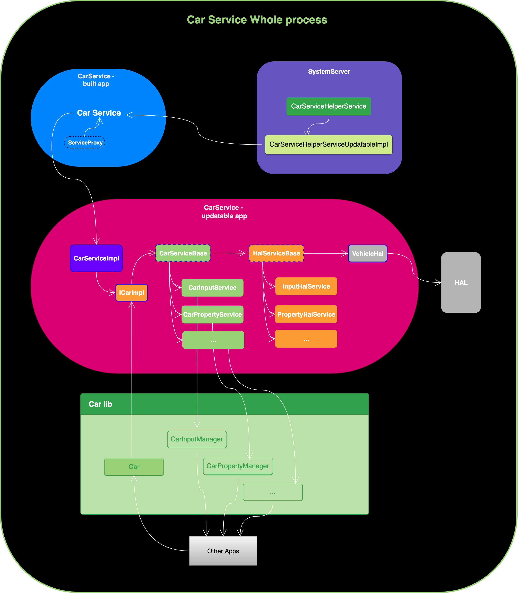

Android 15 CarService源码01-服务启动
背景¶
SystemServer 中专门为了 Automotive OS 设立的系统服务，用来管理车机的核心服务 CarService。 Car Service 实际上分为两个部分：一个是直接与系统服务交互的 builtin app，其在 Android.bp 中的 module name 也就是 CarService。另一个是为该 builtin app 提供实际功能实现的 updatable app，其在 Android.bp 中的 module name 也就是 CarServiceUpdatable。
- builtin app
系统中与车相关的核心 App，掌管最重要的 CarService 服务类。目录位于：packages/services/Car/service-builtin
其 AndroidManifest.xml 如下，可以看到它具有系统权限、与 system uid 共享数据。
<?xml version="1.0" encoding="utf-8"?>
<manifest xmlns:android="http://schemas.android.com/apk/res/android"
xmlns:androidprv="http://schemas.android.com/apk/prv/res/android"
package="com.android.car"
coreApp="true"
android:sharedUserId="android.uid.system">
<original-package android:name="com.android.car"/>
<application android:label="@string/app_title"
android:directBootAware="true"
android:allowBackup="false"
android:persistent="true">
<!-- Do not add any new service without addressing mainline issues -->
<service android:name=".CarService"
android:singleUser="true"
android:exported="true">
<intent-filter>
<action android:name="android.car.ICar"/>
</intent-filter>
</service>
</application>
</manifest>
- updatable app
builtin app 的所有具体实现以及后续支持的一堆服务都在 updatable app 中实现，目录位于：packages/services/Car/service
其 AndroidManifest.xml 如下，所有功能实现应通过 builtin CarService 进行代理。也就是说，这个 updatable app 仅作为一个更新模块，其功能依赖于 builtin app（位于 packages/services/Car/service-builtin 中）的核心服务。
<?xml version="1.0" encoding="utf-8"?>
<manifest xmlns:android="http://schemas.android.com/apk/res/android"
xmlns:androidprv="http://schemas.android.com/apk/prv/res/android"
package="com.android.car.updatable"
coreApp="true">
<uses-sdk android:minSdkVersion="33"/>
<application android:label="@string/app_title"
android:directBootAware="true"
android:allowBackup="false">
<!-- Do not add any new components here. Everything should be proxied through builtin
carservice -->
</application>
</manifest>
我们通过一张表格对CarService相关组件的构成进行总结。
| car相关组件 | 所属进程 | 作用 |
|---|---|---|
| CarServiceHelperService | SystemServer | 管理 Car Serivce 的系统服务 |
| CarService | builtin app | Car 核心服务 |
| CarServiceUpdatable | updatable app | Car 核心服务的具体实现 |
| Car API | android.car.jar | Car API SDK |
CarService在系统中的位置以及与外部的交互链路，可以通过一张总体图来直观展示。

关于CarService服务相关模块的知识，我们这里仅做简要概述，具体构成将在后续的CarService编译系列文章中深入分析。
system_server进程¶
SystemServer.startOtherServices()¶
// frameworks/base/services/java/com/android/server/SystemServer.java
// SystemServer 是 Android 系统启动的核心类之一，负责启动所有的系统服务。
public final class SystemServer implements Dumpable {
// 定义了汽车服务帮助器类的完整类名，用于动态加载该服务。
private static final String CAR_SERVICE_HELPER_SERVICE_CLASS =
"com.android.internal.car.CarServiceHelperService";
/**
* @param t 用于记录服务启动过程中的时间跟踪和日志记录。
*/
private void startOtherServices(@NonNull TimingsTraceAndSlog t) {
t.traceBegin("startOtherServices");
// 检查设备是否支持汽车相关功能（是否为 Automotive 系统）。
boolean isAutomotive = mPackageManager
.hasSystemFeature(PackageManager.FEATURE_AUTOMOTIVE);
// 如果设备支持汽车功能，启动汽车服务帮助器（CarServiceHelperService）。
if (isAutomotive) {
// 开始追踪 "StartCarServiceHelperService" 的启动过程。
t.traceBegin("StartCarServiceHelperService");
// 动态加载并启动 CarServiceHelperService 服务类。
final SystemService cshs = mSystemServiceManager
.startService(CAR_SERVICE_HELPER_SERVICE_CLASS);
// 如果启动的服务实现了 Dumpable 接口，则将其注册到调试工具中。
if (cshs instanceof Dumpable) {
mDumper.addDumpable((Dumpable) cshs);
}
// 如果启动的服务实现了 DevicePolicySafetyChecker 接口，
// 则将其设置为设备策略管理的安全检查器。
if (cshs instanceof DevicePolicySafetyChecker) {
dpms.setDevicePolicySafetyChecker((DevicePolicySafetyChecker) cshs);
}
// 记录 "StartCarServiceHelperService" 任务的结束时间。
t.traceEnd();
}
t.traceEnd(); // startOtherServices
}
}
SystemServer.startOtherServices() 里动态加载并启动 CarServiceHelperService 服务类。
SystemServiceManager.startService()¶
// frameworks/base/services/core/java/com/android/server/SystemServiceManager.java
// SystemServiceManager 是 Android 系统服务管理的核心类。
// 负责创建、启动和管理系统服务。
public final class SystemServiceManager implements Dumpable {
/**
* 通过类名从当前 {@code SYSTEMSERVERCLASSPATH} 启动服务。
*
* 通常情况下，这个方法主要用于以下场景：
* - 服务定义在构建时无法通过 {@code services.jar} 解析。
* - 服务定义在 APEX 包（由 {@code PRODUCT_APEX_SYSTEM_SERVER_JARS} 定义）。
* - 服务来自下游自定义的 jar 包（由 {@code PRODUCT_SYSTEM_SERVER_JARS} 定义）。
*
* 对于其他情况，推荐直接使用类型显式的 {@link #startService(Class)} 方法。
*
* @param className 服务类的完整类名。
* @return 启动的服务实例。
*/
@android.ravenwood.annotation.RavenwoodKeep
public SystemService startService(String className) {
// 从类加载器加载指定的服务类。
final Class<SystemService> serviceClass = loadClassFromLoader(
className, this.getClass().getClassLoader());
// 调用显式类型的方法启动服务。
return startService(serviceClass);
}
private static Class<SystemService> loadClassFromLoader(String className,
ClassLoader classLoader) {
try {
return (Class<SystemService>) Class.forName(className, true, classLoader);
} catch (ClassNotFoundException ex) {
...
}
}
/**
* 创建并启动一个系统服务。该服务类必须是 {@link com.android.server.SystemService} 的子类。
*
* @param serviceClass 系统服务类，必须实现 SystemService 接口。
* @return 启动的服务实例（永不为 null）。
* @throws RuntimeException 如果服务启动失败，则抛出运行时异常。
*/
@android.ravenwood.annotation.RavenwoodKeep
@UsesReflection(
@KeepTarget(
instanceOfClassConstantExclusive = SystemService.class,
methodName = "<init>",
methodParameterTypePatterns = {@TypePattern(constant = Context.class)}))
public <T extends SystemService> T startService(Class<T> serviceClass) {
try {
// 获取服务类的完整名称，用于日志记录。
final String name = serviceClass.getName();
Slog.i(TAG, "Starting " + name);
// 使用 Trace 工具记录服务启动的时间点，用于性能分析。
Trace.traceBegin(Trace.TRACE_TAG_SYSTEM_SERVER, "StartService " + name);
// 检查服务类是否继承自 SystemService。
if (!SystemService.class.isAssignableFrom(serviceClass)) {
throw new RuntimeException("Failed to create " + name
+ ": service must extend " + SystemService.class.getName());
}
// 创建服务实例。
final T service;
try {
// 获取服务类的构造器（必须是接收 Context 参数的公共构造器）。
Constructor<T> constructor = serviceClass.getConstructor(Context.class);
// 使用反射调用构造器实例化服务对象。
service = constructor.newInstance(mContext);
}
...
// 调用启动服务的方法。
startService(service);
// 返回服务实例。
return service;
} finally {
// 标记服务启动的结束时间。
Trace.traceEnd(Trace.TRACE_TAG_SYSTEM_SERVER);
}
}
/**
* 启动系统服务实例。
*
* @param service 系统服务实例（必须继承自 SystemService）。
*/
@android.ravenwood.annotation.RavenwoodKeep
public void startService(@NonNull final SystemService service) {
// 检查服务是否已经启动（通过类名判断）。
String className = service.getClass().getName();
if (mServiceClassnames.contains(className)) {
Slog.i(TAG, "Not starting an already started service " + className);
return;
}
// 如果服务尚未启动，则将其类名添加到已启动服务列表。
mServiceClassnames.add(className);
// 将服务注册到系统服务列表中。
mServices.add(service);
// 开始服务启动的计时。
long time = SystemClock.elapsedRealtime();
try {
// 调用服务的 onStart 方法完成实际启动逻辑。
service.onStart();
} catch (RuntimeException ex) {
// 如果 onStart 方法抛出异常，则抛出运行时异常。
throw new RuntimeException("Failed to start service " + service.getClass().getName()
+ ": onStart threw an exception", ex);
}
// 检查服务启动的耗时，如果耗时过长则发出警告。
warnIfTooLong(SystemClock.elapsedRealtime() - time, service, "onStart");
}
}
通过反射调用构造器实例化服务对象，并调用服务的 onStart 方法完成实际启动逻辑。
CarServiceHelperService.onStart()¶
// frameworks/opt/car/services/builtInServices/src/com/android/internal/car/CarServiceHelperService.java
/**
* 车载服务的系统服务端辅助服务。用于启动车载服务（CarService）并为其提供必要的 API。
* 仅适用于车载产品。
*
* @hide
*/
public class CarServiceHelperService extends SystemService
implements Dumpable, DevicePolicySafetyChecker, CarServiceHelperInterface {
// 动态更新的辅助服务对象，用于扩展和灵活管理 CarService 的功能
private CarServiceHelperServiceUpdatable mCarServiceHelperServiceUpdatable;
/**
* 构造函数：使用默认的组件实例来初始化 CarServiceHelperService。
* @param context 系统服务上下文，用于访问系统资源。
*/
public CarServiceHelperService(Context context) {
// 调用另一个构造函数，并提供默认实现的依赖组件
this(context,
new CarLaunchParamsModifier(context), // 启动参数修改器
new CarWatchdogDaemonHelper(TAG), // 用于监控车载系统运行状态
/* carServiceHelperServiceUpdatable= */ null, // 没有提供更新服务实例
/* carDevicePolicySafetyChecker= */ null, // 没有提供设备安全检查器
new CarActivityInterceptor(), // 活动拦截器
new CarDisplayCompatScaleProvider(context) // 显示缩放适配器
);
}
/**
* 测试构造函数：提供对依赖组件的完全控制，用于更灵活的初始化。
* @param context 系统服务上下文
* @param carLaunchParamsModifier 启动参数修改器
* @param carWatchdogDaemonHelper 守护程序辅助工具
* @param carServiceHelperServiceUpdatable 可更新的辅助服务
* @param carDevicePolicySafetyChecker 设备策略安全检查器
* @param carActivityInterceptor 活动拦截器
* @param carDisplayCompatScaleProvider 显示适配缩放器
*/
@VisibleForTesting
CarServiceHelperService(
Context context,
CarLaunchParamsModifier carLaunchParamsModifier,
CarWatchdogDaemonHelper carWatchdogDaemonHelper,
@Nullable CarServiceHelperServiceUpdatable carServiceHelperServiceUpdatable,
@Nullable CarDevicePolicySafetyChecker carDevicePolicySafetyChecker,
@Nullable CarActivityInterceptor carActivityInterceptor,
@Nullable CarDisplayCompatScaleProvider carDisplayCompatScaleProvider) {
// 调用父类 SystemService 的构造函数
super(context);
// 保存传入的上下文和组件引用
mContext = context;
// 启动后台线程并获取其消息队列处理程序
mHandlerThread.start();
mHandler = new Handler(mHandlerThread.getLooper());
// 保存其他依赖组件的引用
mCarLaunchParamsModifier = carLaunchParamsModifier;
mCarActivityInterceptor = carActivityInterceptor;
mCarDisplayCompatScaleProvider = carDisplayCompatScaleProvider;
mCarWatchdogDaemonHelper = carWatchdogDaemonHelper;
// 初始化动态更新服务对象
try {
if (carServiceHelperServiceUpdatable == null) {
// 创建接口和实现的映射表，用于传递给动态加载的类
Map<String, Object> interfaces = new ArrayMap<>();
interfaces.put(CarServiceHelperInterface.class.getSimpleName(), this);
interfaces.put(CarLaunchParamsModifierInterface.class.getSimpleName(),
mCarLaunchParamsModifier.getBuiltinInterface());
interfaces.put(CarActivityInterceptorInterface.class.getSimpleName(),
mCarActivityInterceptor.getBuiltinInterface());
interfaces.put(CarDisplayCompatScaleProviderInterface.class.getSimpleName(),
mCarDisplayCompatScaleProvider.getBuiltinInterface());
// 使用反射机制动态加载类并实例化对象
mCarServiceHelperServiceUpdatable = (CarServiceHelperServiceUpdatable) Class
.forName(CSHS_UPDATABLE_CLASSNAME_STRING) // 动态类名
.getConstructor(Context.class, Map.class) // 获取构造函数
.newInstance(mContext, interfaces); // 实例化对象
Slogf.d(TAG, "CarServiceHelperServiceUpdatable created via reflection.");
} else {
// 如果传入了更新服务实例，直接使用
mCarServiceHelperServiceUpdatable = carServiceHelperServiceUpdatable;
}
} catch (Exception e) {
// 异常处理：如果动态加载失败，记录错误日志并终止进程
Slogf.w(TAG, e, "*** CARHELPER KILLING SYSTEM PROCESS: "
+ "Can't create CarServiceHelperServiceUpdatable.");
Slogf.w(TAG, "*** GOODBYE!");
Process.killProcess(Process.myPid()); // 杀死当前进程
System.exit(10); // 退出程序
}
}
/**
* 重写的系统服务启动方法，用于启动服务和初始化逻辑。
*/
@Override
public void onStart() {
// 启动逻辑省略的部分（可能是注册服务、广播等操作）
...
// 启动动态更新服务对象的启动逻辑
mCarServiceHelperServiceUpdatable.onStart();
...
}
}
在 CarServiceHelperService 造函数中使用反射机制动态加载类并实例化 CarServiceHelperServiceUpdatableImpl 对象，并在 onStart() 函数中调用 CarServiceHelperServiceUpdatableImpl.onStart()。
CarServiceHelperServiceUpdatableImpl.onStart()¶
// frameworks/opt/car/services/updatableServices/src/com/android/internal/car/updatable/CarServiceHelperServiceUpdatableImpl.java
/**
* 实现抽象类 CarServiceHelperUpdatable 的具体类。
* 该类负责与车载服务（CarService）建立连接并执行相关操作。
*/
@Keep
public final class CarServiceHelperServiceUpdatableImpl
implements CarServiceHelperServiceUpdatable, Executor {
private static final String CAR_SERVICE_PACKAGE = "com.android.car";
// 定义一个匿名内部类，用于处理与车载服务（CarService）的连接和断开事件。
private final ServiceConnection mCarServiceConnection = new ServiceConnection() {
/**
* 当车载服务成功连接时调用此方法。
* @param componentName 连接的服务组件的名称。
* @param iBinder 服务的 IBinder 接口，用于与服务进行通信。
*/
@Override
public void onServiceConnected(ComponentName componentName, IBinder iBinder) {
if (DBG) Slogf.d(TAG, "onServiceConnected: %s", iBinder); // 打印日志记录服务连接成功。
handleCarServiceConnection(iBinder); // 调用方法处理服务连接的后续逻辑。
}
/**
* 当车载服务意外断开（例如崩溃或被杀死）时调用此方法。
* @param componentName 断开的服务组件的名称。
*/
@Override
public void onServiceDisconnected(ComponentName componentName) {
handleCarServiceCrash(); // 调用方法处理服务崩溃的后续逻辑。
}
};
/**
* 服务启动时调用此方法，负责启动车载服务并进行必要的初始化。
*/
@Override
public void onStart() {
// 创建一个意图（Intent）对象，用于启动指定的车载服务。
Intent intent = new Intent(CAR_SERVICE_INTERFACE).setPackage(CAR_SERVICE_PACKAGE);
// 获取系统用户上下文（UserHandle.SYSTEM）以确保服务在系统用户的上下文中运行。
Context userContext = mContext.createContextAsUser(UserHandle.SYSTEM, /* flags= */ 0);
// 尝试绑定车载服务（CarService）。
// 使用 Context.BIND_AUTO_CREATE 标志表示如果服务尚未启动，则会自动创建并启动它。
if (!userContext.bindService(intent, Context.BIND_AUTO_CREATE, this,
mCarServiceConnection)) {
// 如果绑定失败，打印警告日志并终止操作。
Slogf.wtf(TAG, "cannot start car service");
}
...
}
}
CAR_SERVICE_INTERFACE 是在 car-lib 中定义。
// packages/services/Car/car-lib/src/com/android/car/internal/common/CommonConstants.java
public final class CommonConstants {
public static final String CAR_SERVICE_INTERFACE = "android.car.ICar";
}
通过对 CarServiceHelperServiceUpdatableImpl.onStart() 方法的分析，可以清楚地看出，该方法通过调用 bindService() 来绑定 CarService 服务。
到此，system_server 进程启动 CarService 的工作完毕，我们接下来继续看 CarService 进程启动过程。
CarService进程¶
在前面我们提到过在 packages/services/Car/service-builtin/AndroidManifest.xml 中：
<?xml version="1.0" encoding="utf-8"?>
<manifest xmlns:android="http://schemas.android.com/apk/res/android"
xmlns:androidprv="http://schemas.android.com/apk/prv/res/android"
package="com.android.car"
coreApp="true"
android:sharedUserId="android.uid.system">
<original-package android:name="com.android.car"/>
<application android:label="@string/app_title"
android:directBootAware="true"
android:allowBackup="false"
android:persistent="true">
<!-- Do not add any new service without addressing mainline issues -->
<service android:name=".CarService"
android:singleUser="true"
android:exported="true">
<intent-filter>
<action android:name="android.car.ICar"/>
</intent-filter>
</service>
</application>
</manifest>
所以 system_server 进程启动 CarService 其实就是 com.android.car.CarService 。
CarService构造函数¶
// packages/services/Car/service-builtin/src/com/android/car/CarService.java
/**
* Proxy service for CarServiceImpl.
* 这是一个代理服务类，用于代理实际的 CarServiceImpl 服务。通过继承 ServiceProxy 类，
* 该类可以动态绑定实现类，并提供统一的服务接口。
*/
public class CarService extends ServiceProxy {
// Binder 线程池的最大线程数设置为 31，与 system_server 的设置保持一致。
// system_server 中的最大 Binder 线程数也设置为 31（见 SystemServer.java 的 sMaxBinderThreads）。
private static final int MAX_BINDER_THREADS = 31;
/**
* 默认构造函数。
* 1. 调用父类构造函数，传入具体实现类的名称。
* 这里通过 UpdatablePackageDependency 提供的动态实现类 `CAR_SERVICE_IMPL_CLASS`。
* 2. 调用 BinderInternal.setMaxThreads()，将最大 Binder 线程数设置为 31。
* 这样可以确保 CarService 的 Binder 线程池有足够的线程来处理请求。
*/
public CarService() {
super(UpdatablePackageDependency.CAR_SERVICE_IMPL_CLASS);
// 增加 car service 的 Binder 线程数，设置最大线程数为 31。
BinderInternal.setMaxThreads(MAX_BINDER_THREADS);
}
/**
* 当服务通过 startService() 方法启动时调用。
* @param intent 启动服务的意图对象，包含服务启动时传递的数据。
* @param flags 启动标志，描述启动服务的请求类型。
* @param startId 服务的启动请求 ID，用于区分不同的启动请求。
* @return 返回值表明服务的启动模式，这里返回 START_STICKY，表示服务在被杀死后会自动重启。
*/
@Override
public int onStartCommand(Intent intent, int flags, int startId) {
// 保持服务存活，即使在系统资源不足时被杀死也会自动重启。
return START_STICKY;
}
}
CarService 是一个服务类，它作为 CarServiceImpl 的代理，通过动态绑定实际实现类（CAR_SERVICE_IMPL_CLASS）来提供服务
// packages/services/Car/service-builtin/src/com/android/car/UpdatablePackageDependency.java
public final class UpdatablePackageDependency {
/**
* 常量：`com.android.car.CarServiceImpl` 类的全限定类名。
* 用于动态加载 `CarServiceImpl`，该类是 Car 服务的核心实现。
* 此类负责提供 CarService 的核心功能。
*/
public static final String CAR_SERVICE_IMPL_CLASS = "com.android.car.CarServiceImpl";
}
ServiceProxy构造函数¶
// packages/services/Car/service-builtin/src/com/android/car/ServiceProxy.java
/**
* 基类，用于包装服务的生命周期，加载来自可更新汽车服务包的实际服务代码。
* 内置的公共服务应该继承此类，以提供自动包装功能。
* <p>
* 该类通过反射动态加载并包装一个实际的服务类（例如 `CarServiceImpl`），
* 使得服务能够在不改变基础系统代码的情况下更新。
*/
public class ServiceProxy extends Service {
// 实际服务的类名（例如 "com.android.car.CarServiceImpl"）。
private final String mRealServiceClassName;
// 实际服务的类引用（通过反射动态加载）。
private Class mRealServiceClass;
// 实际服务的实例，用于调用服务的生命周期方法。
private ProxiedService mRealService;
/**
* 构造函数，初始化代理服务并指定实际服务的类名。
*
* @param realServiceClassName 真实服务类的全限定类名（例如 "com.android.car.CarServiceImpl"）。
*/
public ServiceProxy(String realServiceClassName) {
mRealServiceClassName = realServiceClassName;
}
/**
* 在代理服务创建时调用，初始化实际服务并启动其生命周期。
*/
@Override
public void onCreate() {
// 初始化真实服务，加载其类并调用生命周期方法。
init();
// 调用真实服务的 onCreate 方法，开始真实服务的生命周期。
mRealService.onCreate();
}
/**
* 初始化实际服务，通过反射加载服务类并设置必要的上下文。
*/
private void init() {
// 创建用于加载可更新包的上下文。
mUpdatablePackageContext = UpdatablePackageContext.create(this);
try {
// 动态加载真实服务类。
mRealServiceClass = mUpdatablePackageContext.getClassLoader().loadClass(
mRealServiceClassName);
// 获取该类的默认构造函数。
Constructor constructor = mRealServiceClass.getConstructor();
// 创建真实服务实例。
mRealService = (ProxiedService) constructor.newInstance();
// 将可更新包的上下文附加到真实服务。
mRealService.doAttachBaseContext(mUpdatablePackageContext);
// 设置真实服务的内置包上下文。
mRealService.setBuiltinPackageContext(this);
} catch (Exception e) {
// 如果加载服务类或初始化过程中发生错误，则抛出运行时异常。
throw new RuntimeException("无法加载类:" + mRealServiceClassName, e);
}
}
}
ServiceProxy 的核心工作原理是通过 Java 反射来动态加载服务类。在系统启动时，ServiceProxy 会读取指定的服务类名 CarServiceImpl ，然后通过反射创建该类的实例，并在生命周期内对其进行管理。
根据前面的背景介绍，我们知道 ServiceProxy 位于 builtin app 中，而需要反射的 CarServiceImpl 则是在 updatable app 中。这两个应用是独立的，在 AndroidManifest.xml 文件中也没有设置 android:process 属性来指定它们使用相同的进程名。
那么，问题来了：它们是如何启动 updatable app 进程的？或者说，这两个应用是否运行在同一个进程中？
此部分问题目前暂时无法解答。由于环境问题，我无法在当前机器上进行编译和调试。等到有合适的环境时，我们再回过头来分析并解决这一问题。
UpdatablePackageContext.create()¶
/**
* 用于包装可更新包的上下文
* 该类的主要目的是提供一个可以访问可更新车服务包（updatable package）的上下文。
*
* @hide
*/
public final class UpdatablePackageContext extends ContextWrapper {
private static final String TAG = UpdatablePackageContext.class.getSimpleName();
// 这个是 com.android.car.updatable 包的上下文
private final Context mPackageContext;
/**
* 创建可更新包的上下文
*
* 这个方法负责找到更新的车服务包，并为它创建上下文。
*
* @param baseContext 传入的基础上下文
* @return UpdatablePackageContext 该方法返回一个 UpdatablePackageContext 对象，
* 该对象用于访问更新的车服务包。
* @throws RuntimeException 如果找不到更新的车服务包或者包不可用，抛出异常。
*/
public static UpdatablePackageContext create(Context baseContext) {
Context packageContext;
try {
// 找到更新的车服务包
PackageInfo info = findUpdatableServicePackage(baseContext);
// 如果未找到包，或者包不是系统应用，抛出异常
if (info == null || info.applicationInfo == null || !(info.applicationInfo.isSystemApp()
|| info.applicationInfo.isUpdatedSystemApp())) {
throw new IllegalStateException(
"Updated car service package is not usable:" + ((info == null)
? "do not exist" : info.applicationInfo));
}
// 为车服务包启用正确的资源替代 (RRO)
enableRROForCarServiceUpdatable(baseContext);
// 使用 CONTEXT_IGNORE_SECURITY，UID 不同但因为该包是可信任的系统应用，
// 因此无需安全检查。
// 创建目标包的上下文，并包括代码和忽略安全检查
packageContext = baseContext.createPackageContext(info.packageName,
Context.CONTEXT_INCLUDE_CODE | Context.CONTEXT_IGNORE_SECURITY);
} catch (Exception e) {
// 如果出错，抛出异常并提供详细的错误信息
throw new RuntimeException("Cannot load updatable package code", e);
}
// 返回包装后的上下文
return new UpdatablePackageContext(baseContext, packageContext);
}
/**
* 查找更新的车服务包
*
* 该方法根据系统属性获取车服务包的包名，并尝试从 PackageManager 中查询该包的信息。
*
* @param baseContext 当前上下文
* @return PackageInfo 更新的车服务包的 PackageInfo 信息
* @throws IllegalStateException 如果系统属性中未定义车服务包名称，抛出异常。
*/
@Nullable
private static PackageInfo findUpdatableServicePackage(Context baseContext) {
PackageInfo info = null;
// 从系统属性中获取车服务包名
String packageName = SystemProperties.get(
PROPERTY_CAR_SERVICE_PACKAGE_NAME, /*def=*/null);
// 如果没有定义包名，抛出异常
if (packageName == null) {
throw new IllegalStateException(
PROPERTY_CAR_SERVICE_PACKAGE_NAME + " property not defined");
}
try {
// 获取该包的 PackageInfo 信息
info = baseContext.getPackageManager().getPackageInfo(packageName, /* flags= */ 0);
} catch (PackageManager.NameNotFoundException e) {
// 如果包名找不到，只记录错误日志，调用者会抛出异常
Slogf.e(TAG, e, "Cannot find updatable car service package:%s", packageName);
}
return info;
}
/**
* 构造方法
*
* @param baseContext 基础上下文
* @param packageContext 更新包的上下文
*/
private UpdatablePackageContext(Context baseContext, Context packageContext) {
super(baseContext);
mPackageContext = packageContext;
}
@Override
public ClassLoader getClassLoader() {
// This context cannot load code from builtin any more.
return mPackageContext.getClassLoader();
}
}
我们先看下 PROPERTY_CAR_SERVICE_PACKAGE_NAME 是什么。
/**
* 只读属性，用于定义可更新的 car service 包名。
*
* <p>此属性必须被定义，并且对于从 AOSP 构建创建的 car service，默认为 {@code "com.android.car.updatable"}。
* 如果是由不同的签名者签署 car framework apex 模块，则该属性的值可以设置为不同的包名。
*/
public static final String PROPERTY_CAR_SERVICE_PACKAGE_NAME =
"ro.android.car.carservice.package";
尽管当前我们无法在环境中直接 dump 出该属性，但从介绍中可以推测，这个属性实际上就是配置为 "com.android.car.updatable"。
所以 UpdatablePackageContext.create() 其实就是获取 com.android.car.updatable 包的上下文。
ServiceProxy.init()¶
这里先获取到 UpdatablePackageContext ，然后再通过 UpdatablePackageContext.getClassLoader() 获取到 "com.android.car.updatable" 的ClassLoader，然后就可以反射到 "com.android.car.updatable" 的 CarServiceImpl 类，并创建 CarServiceImpl 类的实例。尽管这个实例属于包名 "com.android.car.updatable" 中的类，但它本质上还是在当前进程中运行。
ServiceProxy.onCreate()¶
这样调用的就是 CarServiceImpl.onCreate()
CarServiceImpl.onCreate()¶
// packages/services/Car/service/src/com/android/car/CarServiceImpl.java
@Override
public void onCreate() {
TimingsTraceLog initTiming = new TimingsTraceLog(CAR_SERVICE_INIT_TIMING_TAG,
TraceHelper.TRACE_TAG_CAR_SERVICE, CAR_SERVICE_INIT_TIMING_MIN_DURATION_MS);
initTiming.traceBegin("CarService.onCreate");
initTiming.traceBegin("getVehicle");
mVehicle = VehicleStub.newVehicleStub();
initTiming.traceEnd(); // "getVehicle"
EventLogHelper.writeCarServiceCreate(/* hasVhal= */ mVehicle.isValid());
mVehicleInterfaceName = mVehicle.getInterfaceDescriptor();
Slogf.i(CarLog.TAG_SERVICE, "Connected to " + mVehicleInterfaceName);
EventLogHelper.writeCarServiceConnected(mVehicleInterfaceName);
mICarImpl = new ICarImpl.Builder()
.setServiceContext(this)
.setBuiltInContext(getBuiltinPackageContext())
.setVehicle(mVehicle)
.setSystemInterface(
SystemInterface.Builder.defaultSystemInterface(this).build())
.setVehicleInterfaceName(mVehicleInterfaceName)
.build();
mICarImpl.init();
mVehicle.linkToDeath(mVehicleDeathRecipient);
ServiceManagerHelper.addService("car_service", mICarImpl);
SystemPropertiesHelper.set("boot.car_service_created", "1");
super.onCreate();
initTiming.traceEnd(); // "CarService.onCreate"
}
这里把 car_service 加入到 ServiceManager 里。
我们目前已经分析完了 CarService 服务的启动流程，接下来我们将转向分析 CarService 的初始化流程，进一步探讨服务的详细工作机制。